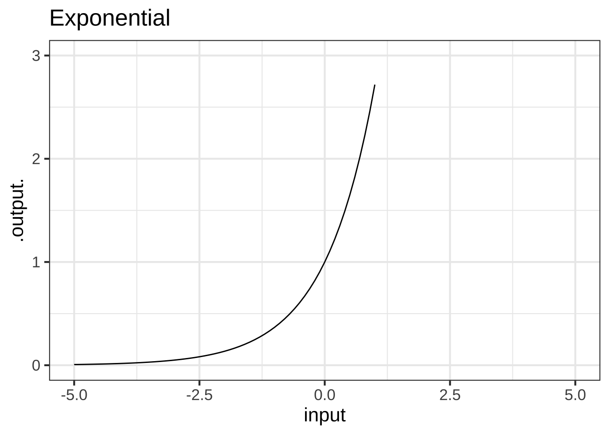
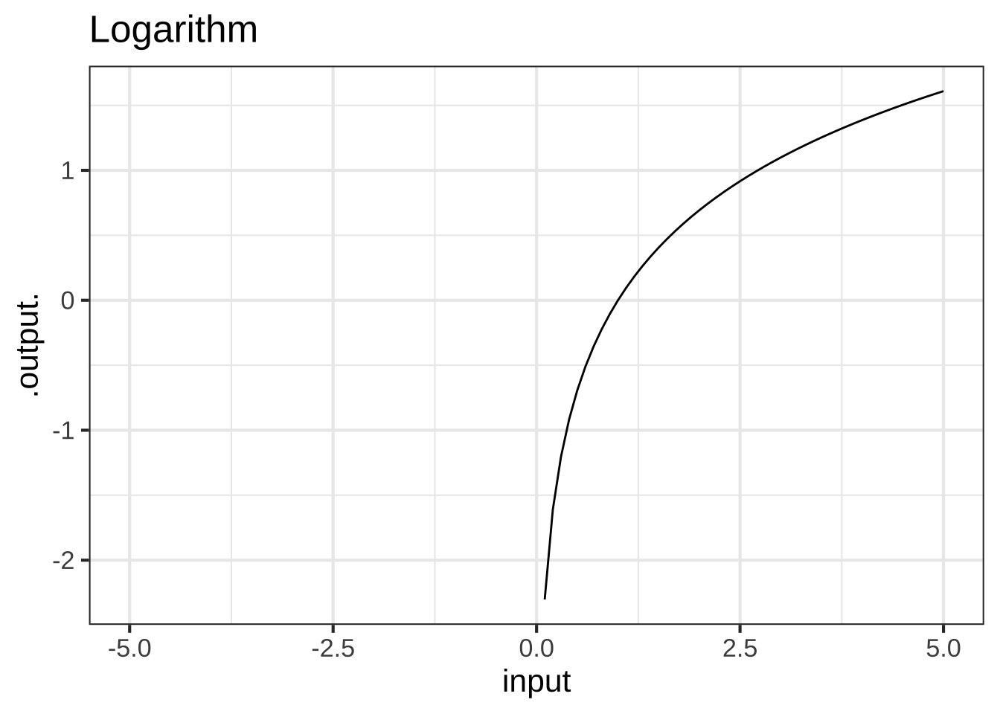
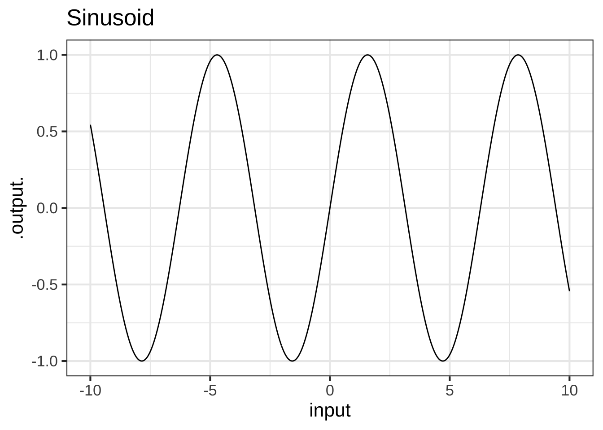
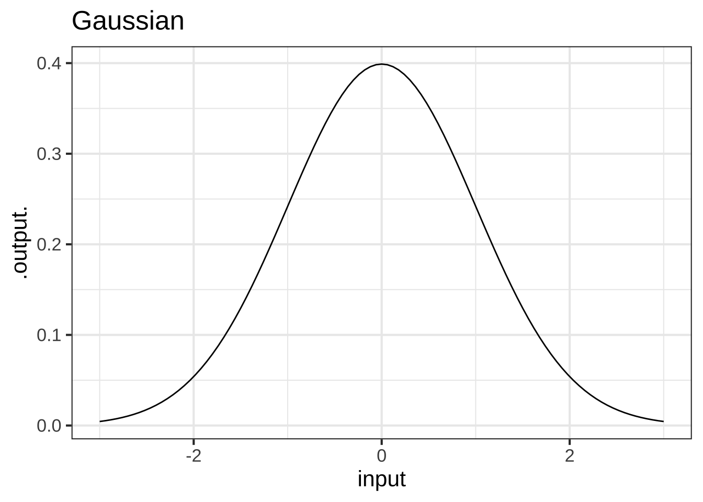
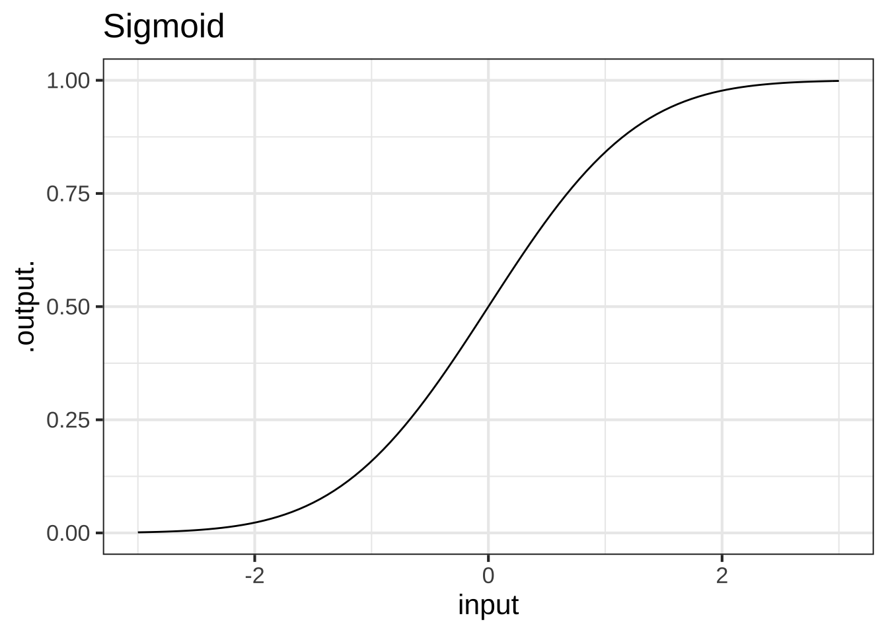
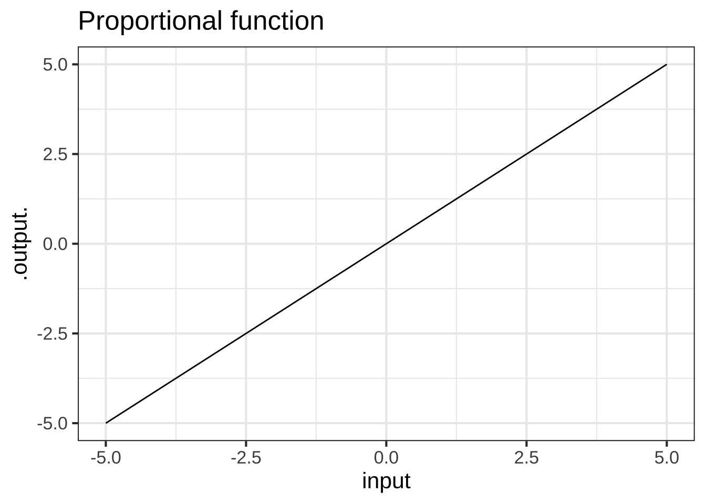
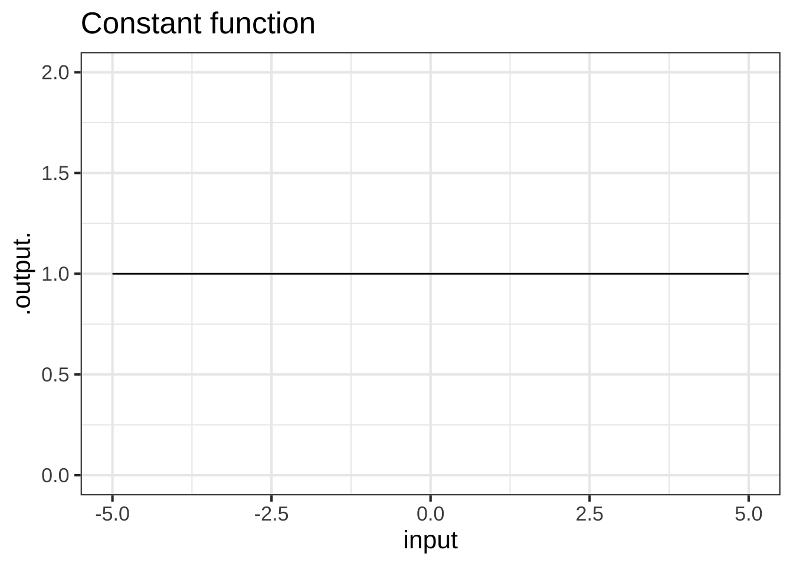

Chapter 2 Functions for modeling
Mathematical modeling is a process where mathematics is used to understand, analyze, or predict a real-world situation. This process often occurs in cycles that revisit each of the following three stages:  200
200
- Translate the real-world situation into a mathematical form (called a model)
- Shape the model to answer the question at hand
- Evaluate the model’s reliability and agreement with the real-world situation
We’ll discuss each stage of the modeling process in the following paragraphs and explore as a concrete example the way Sir Isaac Newton applied his theory of universal gravitation to the motion of planets.
The first stage of mathematical modeling involves translating the real-world situation into a mathematical form; the output or result of this stage is called a mathematical model. In this book the objective of the translation phase will almost always be to choose or construct one or more functions that represent the relationships involved in the system being studied. You’ll learn several strategies for turning what you know about the system into appropriate functions. And you’ll learn some standard frameworks for organizing your ideas to help you determine how functions will be related, for instance Newton’s framework relating position, velocity, and acceleration as rates of change of one another. 210
As a concrete example of this first stage, consider how Newton had to translate observations about planetary motion into a mathematical form. He was trying to make sense of the motion of planets in light of his novel theory that gravity is a universal force of attraction between all masses, rather than something peculiar to celestial bodies. He showed that the motions of planets, moons, and the Sun are governed by the same basic principles as an apple falling from a tree. To do this, he modeled force as a quantity that can be measured, simplified the complexity of the planets to mere masses (another measurable quantity), and supposed that position and motion were related.
His theory of the motion of planets was based on two fundamental mathematical models: First,
\[F = ma\ \ \ \text{(Newton's Second Law)}\] which relates force, mass, and acceleration. Second, the
\[F = \frac{G m_1 m_2}{d^2}\ \ \ \text{(Law of Universal Gravitation)}\]
(sometimes called the inverse square law), which relates the mass of two objects (\(m_1\) and \(m_2\)), and the distance between them to the force of gravitation. We’ll get to the purpose of the \(G\) in Chapter 16, but for the moment, understand that this process of translating observations about planetary motion into a mathematical form is characteristic of the first stage of the modeling process.
The second stage of modeling involves doing mathematical work to shape the model into a form that can directly answer the modeler’s question of interest. For instance, Newton knew from previous astronomical observations and Kepler’s theorizing that planets’ orbits are elliptical in shape that he needed to do some work on his two models in order to deduce the orbital shapes consistent with his Second Law and Universal Gravitation.
In this book you’ll learn to use several key tools for doing mathematical work on functions. We might as well name them now: differentiation, anti-differentiation, optimization, and zero-finding. These tools derive directly from Newton’s work on planetary motion, but thankfully, we are not constrained to using the technology of his day in their application. Instead, we will leverage modern computers to make each tool easier to use. Your job is to learn enough about them that you will know when, how, and why to use each tool.
The third and final stage of mathematical modeling often involves evaluating the model. The goal is to determine how reliable is the model’s answer and to see if the consequences of the model are consistent with what happens in the real world. The evaluation often leads to a re-assessment of the model and a return to stage 1 to improve things. The resulting loop is called the modeling cycle. For example, it seems likely that Newton did not start out knowing that gravitation follows an inverse square law. Perhaps he went through several modeling cycles until he found the form that was consistent with Kepler’s elliptical orbits.
In this book you’ll learn techniques for comparing models to data and for making predictions from models that can be compared to observations. You’ll also see examples of when the evaluation of a function suggests revisions that might improve the model.
2.1 Pattern-book functions
In this section, we introduce the Pattern-book functions–a short list of simple mathematical functions that provide a large majority of the tools for representing the real world as a mathematical object.
Think of the items in this list as different actors, each of whom is skilled in portraying an archetypical character: hero, outlaw, lover, fool, comic. A play brings together different characters, costumes them, and relates them to one another through dialog or other means. All this is for the purpose of telling a story and providing insight into human relationships and emotions. 230
A mathematical model is a kind of story and a mathematical modeler a kind of playwright. She combines mathematical character types to tell a story about relationships. But there is only a handful of archetypal mathematical functions, the analog of the character actors in drama and comedy. In creating a mathematical model, you clothe the actors to suit the era and location and assemble them together in harmony or discord.
Costume designers and others do not start from nothing. There are reference guides that collect patterns which a designer can customize to the needs at hand. These reference guides are sometimes called “pattern books.” (See Figure 2.1 for an example.)
Figure 2.1: A pattern book of theatrical costumes
Similarly, we will start with a pattern set of functions that have been collected from generations of experience. To remind us of their role in modeling, we’ll call these pattern-book functions. These pattern-book functions are useful in describing diverse aspects of the real world and have simple calculus-related properties that make them relatively easy to deal with. There are just a handful pattern-book functions from which untold numbers of useful modeling functions can be constructed. Mastering calculus is in part a matter of becoming familiar with the mathematical connections among the pattern-book functions. (You’ll see these in due time.)
Here is a list of our pattern-book functions showing both a traditional notation and the R formula:
| Pattern name | Traditional notation | R notation |
|---|---|---|
| exponential | \(e^x\) | exp(x) |
| logarithm (“natural log”) | \(\ln(x)\) | log(x) |
| sinusoid | \(\sin(x)\) | sin(x) |
| square | \(x^2\) | x^2 |
| proportional | \(x\) | x |
| constant | \(1\) | 1 |
| reciprocal | \(1/x\) or \(x^{-1}\) | 1/x |
| gaussian | \(\dnorm(x)\) | dnorm(x) |
| sigmoid | \(\pnorm(x)\) | pnorm(x) |
These functions are shown with a traditional formula notation to highlight the connections to the math you already studied, and \(x\) is used as the input to these functions out of tradition. 240
The list of pattern-book functions is short. You should memorize the names and be able easily to associate each name with the traditional notation.
Over the next several chapters, we will introduce several features of functions. These features include:
- monotonicity up or down
- concavity up or down
- horizontal asymptotes
- vertical asymptotes
- periodicity
- continuity
By the end of Block 1, you should be able to list all the basic pattern-book functions and describe the features relevant to each. 250
These pattern-book functions are widely applicable. But nobody would confuse the pictures in a pattern book with costumes that are ready for wear. Each pattern must be tailored to fit the actor and customized to fit the theme, setting, and action of the story. 260
Similarly, the mathematical functions used in real-world applications—as opposed to the pattern-book functions—are adorned with parameters. Parameters do the work of fitting the pattern to the units and dimensions of the input and output quantities. Continuing our analogy, if the pattern is for a sock, the parameter is the size needed to fit the foot. And just as there are different systems for sizing shirts, trousers, shoes, and so on, tradition has favored idioms for parameterizing the different kinds of pattern-book functions. We haven’t yet introduced these idioms, but when we do in Chapter 7 you are well advised to learn to interpret them at a glance.
There is universal agreement about the names of all of the pattern-book functions except for two: the gaussian and the logarithm.
The name “gaussian” is not descriptive; the graph of a gaussian function looks like a camel’s hump, the curve of a bell, or a bump in the road. There are all sorts of bell-shaped functions that differ slightly in their origins and detailed shape. In this book, we may use the terms “hump”, “bell”, or “bump” to remind you of the basic shape, but the specific mathematical function we have in mind is called the gaussian function, named after a tremendously influential mathematician, Carl Friedrich Gauss (1777-1855). This function, first published in 1718 (before Gauss was born), has an important role throughout physical science, technology, and data science. In probability theory and the social sciences, the shape of the function is given the simple name “normal distribution”; it shows up in so many places to be considered utterly unsurprising and “normal.”
The name “logarithm” is anything but descriptive. The name was coined by the inventor, John Napier (1550-1617), to emphasize the original purpose of his invention: to simplify the work of multiplication and exponentiation. The name comes from the Greek words logos, meaning “reasoning” or “reckoning,” and arithmos, meaning “number.” A catchy marketing term for the new invention, at least for those who speak Greek!
Although invented for the practical work of numerical calculation, the logarithm function has become central to mathematical theory as well as modern disciplines such as thermodynamics and information theory. The logarithm is key to the measurement of information and magnitude. As you know, there are units of information used particularly to describe the information storage capacity of computers: bits, bytes, megabytes, gigabytes, and so on. Very much in the way that there are different units for length (cm, meter, kilometer, inch, mile, …), there are different units for information and magnitude. For almost everything that is measured, we speak of the “units” of measurement. For logarithms, instead of “units” by tradition another word is used: the base of the logarithm. The most common units outside of theoretical mathematics are base-2 (“bit”) and base-10 (“decade”). But the unit that is most convenient in mathematical notation is “base e,” where \(e = 2.71828182845905...\). This is genuinely a good choice for the units of the logarithm, but that’s hardly obvious to anyone encountering it for the first time. To make the choice more palatable, it’s marketed as the “base of the natural logarithm.” In this book, we’ll be using this natural logarithm as our official pattern-book logarithm.
2.2 The power-law family
Three of the pattern-book functions—\(1/x\), \(x\), \(x^2\)—actually belong to an infinite family called the power-law functions. The three shown above occur so often and are so closely related to the other pattern-book functions that they receive their own special names (inverse, proportional, and square) and place in our list; however, it is the family of power-law functions that form the more general pattern needed for modeling.
Some other examples of power-law functions are \(x^3, x^4, \ldots\) as well as \(x^{1/2}\) (also written \(\sqrt{x}\)), \(x^{1.36}\), and so on. Some of these also have special (albiet less frequently used) names, but all of the power-law functions can be written as \(x^p\), where \(x\) is the input and \(p\) is a number. 290.
Within the power-law family, it is helpful to know and be able to differentiate between several overlapping groups:
- The monomials. These are power-law functions such as \(m_0(x) \equiv x^0\), \(m_1(x) \equiv x^1\), \(m_2(x) \equiv x^2\), \(\ldots\), \(m_p(x) \equiv x^p\), \(\ldots\), where \(p\) is a whole number (i.e., a non-negative integer). Of course, \(m_0()\) is exactly the same as the constant function, since \(x^0 = 1\). Likewise, \(m_1(x)\) is the same as the identity function since \(x^1 = x\). As for the rest, they have just two general shapes: both arms up for even powers of \(p\) (like in \(x^2\), a parabola); one arm up and the other down for odd powers of \(p\) (like in \(x^3\), a cubic).
Figure 2.2: Graphs of the monomial functions from order 2 to 5.
- The negative powers. These are power-law functions where \(p<0\), such as \(f(x) \equiv x^{-1}\), \(g(x) \equiv x^{-2}\), \(h(x) \equiv x^{-1.5}\). For negative powers, the size of the output is inversely proportional to the size of the input. In other words, when the input is large (not close to zero) the output is small, and when the input is small (close to zero), the output is very large. This behavior happens because a negative exponent like \(x^{-2}\) can be rewritten as \(\frac{1}{x^2}\); the input is inverted and becomes the denominator, hence the term “inversely proportional”.
Figure 2.3: Graphs of power-law functions with negative exponents. Note that the function output is very large when \(x\) is near zero.
- The non-integer powers, e.g. \(f(x) = \sqrt{x}\), \(g(x) = x^\pi\), and so on. When \(p\) is either a fraction or an irrational number (like \(\pi\)), the real-valued power-function \(x^p\) can only take non-negative numbers as input. In other words, the domain of \(x^p\) is \(0\) to \(\infty\) when \(p\) is not an integer. You have likely already encountered this domain restriction when using the power law with \(p=\frac{1}{2}\), since \(f(x)\equiv x^{1/2}=\sqrt{x}\), and the square root of a negative number is not a real number. Some of you may have heard about the imaginary numbers that allow you to take the square root of a negative number, but for the moment, you only need to understand that when working with real-valued power-law functions with non-integer exponents, the input must be non-negative. (The story is actually a bit more complicated since, algebraically, rational exponents like \(1/3\) or \(1/5\) with an odd-valued denominator can be applied to negative numbers. Computer arithmetic, however, does not recognize these exceptions.)
Figure 2.4: The domain of power-law functions with non-integer power is \(0 \leq x < \infty\).
2.3 Constructing functions
Often, modeling involves building a complicated function out of the simple shapes provided by the pattern-book functions. This is not yet the time to say much more, but we do want to show you what such a construction looks like in both a traditional style of notation and the style used for programming computers. As you’ll see later, in Chapter 11, to make complicated functions we generally combine simpler functions in one or more of three different ways: linear combinations, products, and composition. 270
As a very brief introduction, consider these examples. A polynomial is a linear combination of simple functions called “monomials.” These are likely familiar to you in traditional notation: \[g(x) \equiv 2 + 3 x - 7x^2\] In the R/mosaic computer notation we will be using the function \(g()\) would be defined like this:
g <- makeFun(2 + 3*x - 7*x^2 ~ x)Notice that the R/mosaic notation has most elements in common with the traditional notation, but the order is somewhat different.
g <-means to give the function the name \(g.\) (In this book, I usually write function names with a pair of parentheses as a suffix, e.g. \(g(x).\) This reminds you that the name refers to a function. But the R name is simplyg, even though I often write it asg()in the text.) The<-is called the assignment operator, the instruction in R to give a name to an object. Here, the object will be the R function created bymakeFun().2 + 3*x - 7*x^2is the formula for the function, that is, the expression found on the right-hand side of \(\equiv\) in the traditional notation.~ xis the part of the R/mosaic notation that says, “The name of the input will bex.” In traditional notation, the name of the input is in parentheses following the name of the function \(g\,{\mathbf{(x)}}\), but in R/mosaic notation, the two are in different places: the function name is to the left of the assignment operator (<-) and the name of the name of the input follows the tilde (~).- The formula and the name of the input are always related in the R/mosaic notation by what is called a tilde expression. The formula is on the left-hand side of the tilde (
~) and the argument name is on the right-hand side of the tilde. If there is more than one argument, all the names go on the right-hand side of the tilde expression, separated by&. (Some people prefer to use+as the separator. That’s fine, but we use the&convention throughout this book.) makeFun()is the R/mosaic operator that takes the information contained in the tilde expression and turns it into an R function; it literally “makes an R function”, hence the name,makeFun().
Functions constructed as a product of simple functions can look like this in tradition notation: \[h(t) \equiv \sin(t) e^{-t}\] and like this in computer notation:
h <- makeFun(sin(t)*exp(-t) ~ t)In function composition, the output of one function is the input to a second function, as with \[H(t) \equiv \sin\left(e^{-t}\right)\] or, in computer notation,
H <- makeFun(sin(exp(-t)) ~ t)2.4 Function shapes
You are going to be building models by selecting an appropriate function or by putting functions together in various ways. This might remind you of Lego blocks. As you know, Legos come in different shapes: \(6\times 2\), \(4\times 2\), \(2\times 2\), and so on. Similarly, each of the pattern-book functions has a distinctively shaped graph. Knowing the shapes by name will help you when you need to build a model. 280

The proportional function and the constant function have extremely simple shapes. Note that the graph of a constant function is not just any line, but a line with zero slope.
## Warning in validate_domain(domain, free_args): Missing domain names: x
## Warning in validate_domain(domain, free_args): Missing domain names: x
It is tempting to deny that the constant function is a function. After all, the output does not depend on the input. Still, this situation arises frequently in modeling: you start out supposing that one quantity depends on another, but it sometimes turns out that it does not. Since functions are our way of representing relationships, it is helpful to have a function for the situation of “no relationship.” The constant function does this job.
You may also notice the proportional function shown above does nothing to change the input; it simply returns as output the same value it received as input. For this reason, the proportional pattern-book function (\(f(x)=x\)) is sometimes called the identity function. Later we will show how this simple pattern-book function can be endowed with parameters that form the basis of many change relationships.
Functions like sin(), log(), pnorm() are always referred to by name with parentheses enclosing the arguments. Other functions are traditionally written without a name, for instance, like \(e^x\) or \(1/x\). These two different conventions can lead to confusion. There is little that can be done to avoid that confusion, since the dual conventions appear throughout technical work.
If absolute consistency of notation were the prime goal, we could have written this book in a style that gives a name to every pattern-book function writes it in the name/parentheses style. Something like this:
reciprocal <- makeFun(1/t ~ t)
constant <- makeFun(1 ~ z)
square <- makeFun(x^2 ~ x)These would be used in the ordinary way, for instance:
reciprocal(7)## [1] 0.1428571constant(123.67)## [1] 1square(19)## [1] 361Writing reciprocal(\(x\)) instead of \(1/x\) is long-winded, which is perhaps why you never see it. But when you see \(1/x\) you should think of it as a function being applied to \(x\) and not as a bit of arithmetic.
By the way … I used different names for the inputs in these three functions just to remind the reader that, for functions with one input, the name has no significance. You just have to make sure to use the same name on the left- and right-hand sides of the tilde expression.
2.5 Exercises
Exercise 2.1: H2KG3
Copy and paste the R/mosaic command below into a SANDBOX. The command shows a simple way to graph a function, in this case exp(). Press “Run code” to execute the command and draw the graph.
slice_plot(exp(x) ~ x, domain(x=c(-3, 3)))
In this exercise, you’ll be modifying the sandbox code to draw different functions, so you can examine their shapes.
Your task is to read and interpret the graphs of the basic modeling functions. Here, you will be looking for zero-crossings: the neighborhood of a point in the function’s domain where the output of the function is negative for inputs on one side and positive for inputs on the other side. If zero is touched but not crossed, we’ll call that “touched zero.”
Make a list of the pattern-book functions. For each function in the list, say whether the function crosses zero, touches zero but doesn’t cross, or doesn’t touch at all in the part of the domain shown in the graphic: \(-3 \leq x \leq 3\). Also note if the value of the function appears to be reaching a horizontal asymptote at zero for very negative \(x\), for very positive \(x\), for both, or neither.
We’ll show you the answers for the exponential function. You’ll have to modify the computer command to graph the other pattern-book functions.
| function name | R formula | zero in domain shown in graph | asymptotic zero |
|---|---|---|---|
| exponential | exp(x) |
no zeros | for very negative \(x\) |
| logarithm | |||
| sinusoid | |||
| square | |||
| proportional | |||
| constant | |||
| reciprocal | |||
| gaussian | |||
| sigmoid |
Exercise 2.2: Pdt9jy
On a piece of paper, sketch from memory a graph of each of the nine pattern-book functions.
Exercise 2.3: VIW7T
For each of the pattern-book functions except the reciprocal, the graph crosses either the vertical axis (that is \(x=0\)) or the horizontal axis (that is, \(f(x) = 0\)), or both. It’s helpful to know the exact quantitative value for the output where the function graph crosses the vertical axis.
To answer these questions, you will want to open a SANDBOX to try the various possibilities.
Question A What is the exact output of the pattern-book exponential function when the input is \(x=0\)?
0︎✘ 0.3989423︎✘ 1/2︎✘ 1\(\heartsuit\ \)
Question B What is the exact output of the pattern-book sine function when the input is \(x=0\)?
0\(\heartsuit\ \) 0.3989423︎✘ 1/2︎✘ 1︎✘
Question C What is the exact output of the pattern-book sigmoid function when the input is \(x=0\)?
0︎✘ 0.3989423︎✘ 1/2\(\heartsuit\ \) 1︎✘
Question D What is the output (to several digits) of the pattern-book hump function when the input is \(x=0\)?
0︎✘ 0.3989423\(\heartsuit\ \)Right. But 0.4 will do when you’re sketching a graph. 1/2︎✘ 1︎✘
Question E What is the exact output of the pattern-book constant function?
0︎✘ 0.3989423︎✘ 1/2︎✘ 1\(\heartsuit\ \)
Exercise 2.4: Qj0JAr
Some of our pattern-book functions have a distinctive property called scale invariance. This means the graph of the function looks the same even when plotted on very different horizontal and vertical axes. The function \(\ln(x)\) plotted on two different scales in Figure 2.5 shows that the graph of the function has practically the same shape.
Figure 2.5: The logarithm function has the same overall shape even when plotted on domains of very different scales.
Figure 2.6 shows a power-law function, \(g(x) \equiv x^2\), which is also scale invariant.
Figure 2.6: The function \(x^2\) shown on two very different domain scales has the same overall shape.
Other pattern-book functions are not scale invariant, for example \(\sin(x)\).
Figure 2.7: The sin( ) function is not scale invariant.
In contrast to scale-invariant functions, some of our pattern-book functions have a characteristic scale. This is a domain length over which the whole of a characteristic feature of the function is evident. Graphing on larger domains simply squashes down the characteristic feature to a small part of the graphic domain. For instance, in the \(\sin()\) function the cycle is a characteristic feature. The cycle in the pattern-book sinusoid has a characteristic length of \(2 \pi\), the length of the cycle. Consequently, the graph looks different depending on the length of the graphics domain in multiples of the characteristic length. You can see from Figure 2.7 that the graph on the domain \(-10 < x < 10\), that is, about 3 times the characteristic scale, looks different from the graph on the larger domain that has a length 30 times the characteristic scale.
The output of the sigmoid function runs from 0 to 1 but reaches these values only asymptotically, as \(x \rightarrow \pm \infty\). In defining a characteristic scale, it would be reasonable to look at the length of the domain that takes the output from, say, 0.01 to 0.99. In other words, we want the characteristic scale to be defined in a way that captures almost all the action in the output of the function. For a gaussian, a reasonable definition of a characteristic scale would be the length of domain where the output falls to about, say, 1% of it’s peak output.
Question A The gaussian (hump) function dnorm() has a characteristic scale. Which of these is a domain length that can encompass the characteristic shape of the gaussian?
0.1︎✘ 1︎✘ 6\(\heartsuit\ \)The domain \(-3 < x < 3\) supports practically everything. 16︎✘ 256︎✘
Question B The sigmoid function pnorm() also has a characteristic scale. Which of these is a domain length that can encompass the characteristic shape of the sigmoid?
0.1︎✘ 1︎✘ 6\(\heartsuit\ \) 16︎✘ 256︎✘
Throughout science, it’s common to set a standard approach to defining a characteristic scale. For instance, the characteristic scale of an aircraft could be taken as the length of body. Gaussian and sigmoids are so common throughout science that there is a convention for defining the characteristic scale called the standard deviation. For the pattern book gaussian and sigmoid, the standard deviation is 1. That’s much shorter than the domain that captures the bulk of action of the gaussian or sigmoid. For this reason, statisticians in practice use a characteristic scale of \(\pm 2\) or \(\pm 3\) standard deviations.